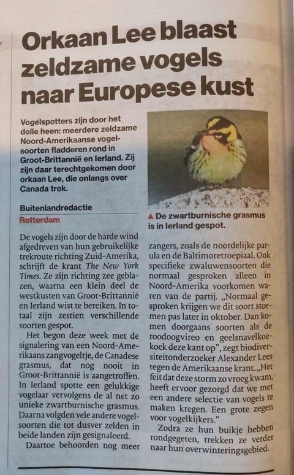

Sparrenzanger, geen letterlijke vertaling
27 oktober 2023 · AD
- Op de foto
- Vertaalde naam uit Google Translate
- Het ging over
- Sparrenzanger (Blackburnian warbler)

In het @ad_nl staat een mooi stuk over zeldzame Noord-Amerikaanse zangvogels die zijn neergestreken in bijvoorbeeld Groot-Brittanië en Ierland. Hierbij plaatsen ze een foto van één van deze mega's: Blackburnian warbler. Buiten het feit dat iedereen in Europa voor dit soort zeldzaamheden eigenlijk alleen de engelse naam gebruikt plaatsen ze toch een Nederlandse naam. Niet de officiële Nederlandse naam, Sparrenzanger, maar een letterlijke vertaling overgenomen van Google Translate. Dat is in de natuurwereld helaas niet hoe het werkt..